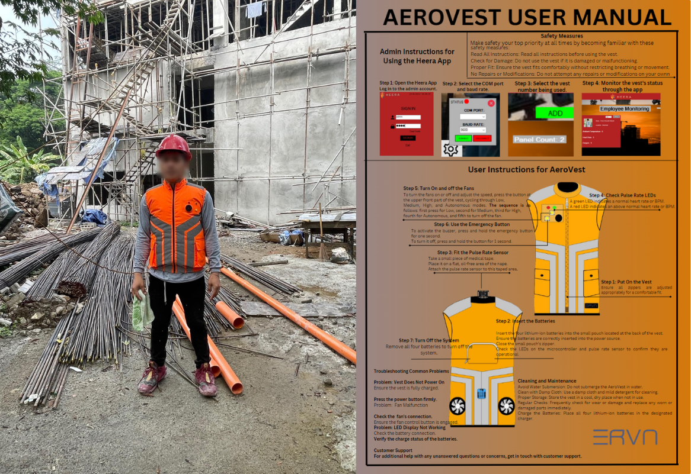
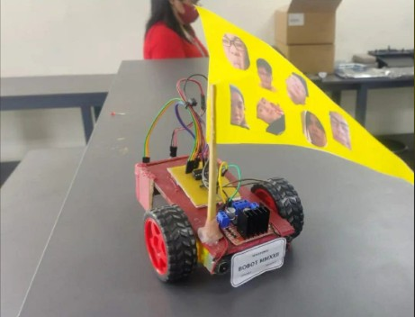

Projects

iLibrary: Library Management System
Developed a full-stack RFID-based Library Management System by architecting a hardware-software bridge between an Arduino Uno R3 and a custom C# .NET desktop application for the application layer within the Microsoft Visual Studio 2022 environment. The hardware layer features an Arduino Uno R3 utilizing the SPI protocol to facilitate low-latency data acquisition from RFID transponders. On the backend, I implemented a robust SQL database management system to handle relational data mapping between assets and users. The final build demonstrates a complete "edge-to-database" pipeline, from low-level hardware debugging and signal testing to high-level UI/UX and database optimization.
Hardware: SPI Interface, Arduino Uno R3, MFRC522 RFID Reader
Programming Language: C++, C# .NET, SQL
Toolchain and Methodologies: Arduino IDE, Microsoft Visual Studio 2022

Aerovest
Developed thesis study whereas we created a wearable automatic cooling vest that utilizes cooling technology to regulate body temperature of electricians and construction workers in a site. This vest features is to read physiological data such as body temperature, heart rate, and environmental data levels using various sensors. The data is then used to automatically adjust the cooling intensity of the vest to maintain optimal comfort for the wearer. It also has a desktop app whereas the head office can monitor the status of their field workers even without access to the internet. The desktop app is built using C# .NET and connects to the vest via ESP-NOW, allowing for real-time monitoring and control of the vest's cooling functions.
Hardware: ESP32, DHT11, MAX30102, Battery, 5V DC Fan
Programming Language: C++, C# .NET, SQL
Toolchain and Methodologies:Arduino IDE, Microsoft Visual Studio 2022, ESPNOW Library, Diptrace

Line Following Robot
Designed and built a line-following robot using LOGIC GATES, for autonomous navigation. Create the logic algorithm by using Karnaugh Maps, Boolean Algebra, and Truth Tables.
Hardware: , Logic Gates, Battery, L298N Motor Driver, 5V DC Motor, IR Sensors
Programming Language: None (Logic Circuit Design)
Toolchain and Methodologies: Breadboard, Multimeter, Soldering Kit, Truthtable, Karnaugh Mapping, Boolean Algebra